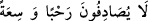

yere oturan ve kendisini başka bir yere çekmelerini isteyen kişiyi istediği yere çekip
götürmezler.
“(Reisler:) Onlar rahat yüzü görmesin (derler).” Onların da cehennemdeki yeri
geniş ve rahat olmasın!
(
) lâfzı, genişlik anlamındaki (
) ile aynı mânâyı taşıyan bir masdardır. (
)
lâfzı ise kime bedduâ edildiğini açıklamaktadır. (
) kelimesi, ibârede bulunduğu
farzedilen bir fiilin mef ’ûl-i bih’i olarak mansup olup ibârenin takdiri şöyledir: (
) yâni “onlar da ne bir genişlik ve ne de bir rahatlıkla karşılaşsınlar!”
veya (
) yâni “ne rahat bir yaşama ne de geniş bir meskene
ersinler!” Burada takdir edilecek ibârelerin özeti şudur: Bunlara hiçbir değer
verilmeyecektir.
İkinci olarak (
) lafzı, mef ’ûl-i mutlak olmak üzere de mansup olmuş olabilir ki o
zaman yaşayışları ve evleri kendilerine rahatlık vermesin, daralmalarını sağlasın!
demektir. Yâni onlara hiç merhaba yoktur!
İnsan dâvet etmiş olduğu kişiye ‘merhabâ’ der ki bu, belâlardan emin olarak “hoş
geldin, safâlar getirdin” anlamındadır.
Kâşifî der ki: Merhabâ, misafire ikram ve değer verme anlamında kullanılan bir
kelimedir.
Bazıları ise kelimenin içeri giren kişiye değer verdiğini ve onun gelişine sevindiğini
göstermek maksadıyla söylendiği, ayrıca başına bir de ( ) eklenerek yani (
)
şeklinde bedduâ için kullanıldığı görüşündedir. Bir hadis şerhinde şöyle denmektedir:
‘Merhabâ kelimesini kullanmak Hz. Peygamber’e uymaktır ve sünnettir. Çünkü Ebû
Talib’in kızı olan Ümmü Hânî Mekke fethedildiği yıl müslüman olarak kendisine
geldiğinde “Merhabâ, yâ Ümme Hânî”[38] buyurmuştur. Ümmü Hânî’nin evi Kâbe
kapılarından birinin bulunduğu yerde olduğundan “Ümmü Hânî kapısı” adıyla anılır.
Çünkü şu sahih bir rivâyettir ki Hz. Peygamber (s.a.) onun evinden mîrâca çıkarılmıştı.
Nitekim Molla Câmî şöyle der:
Ümmü Hânî’nin evine doğru gidip,
Kötü niyetlilerden gizlenmek ne büyük nimet oldu.
“Onlar” kötü amelleri ve bu bedduâyı hak edişleri yüzünden “mutlaka ateşe
gireceklerdir.”
Bu ifâde, cehennem görevlilerine âid olup bununla, onların mezkûr bedduâyı niçin hak
etmiş olduklarını açıklamışlardır. Mânâ şu şekildedir: Bunlar, kötü amelleri ve bu
bedduâyı hakedişleri yüzünden cehenneme gireceklerdir.